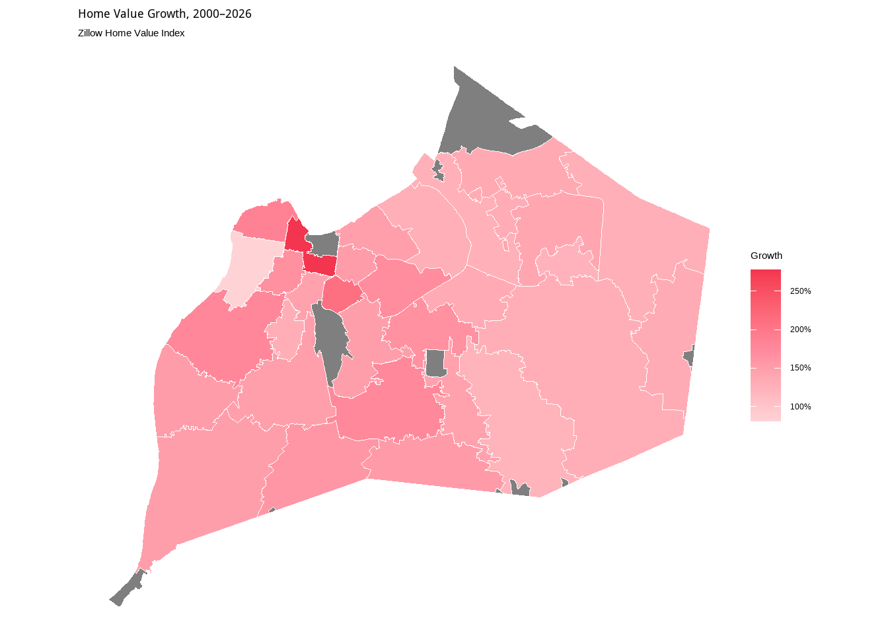
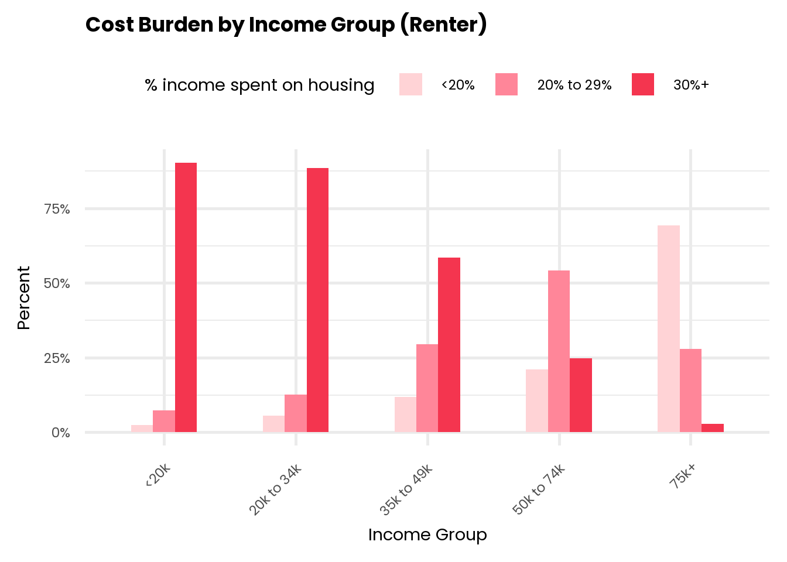
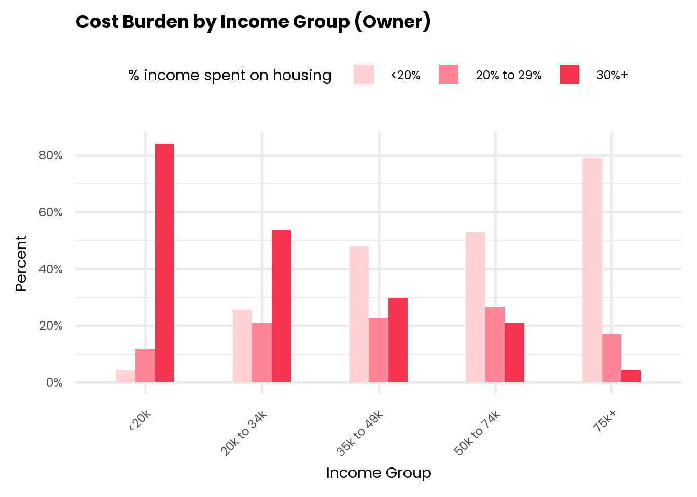

load("data/housing/zillow_hvi.Rdata")
z_hvi <- zillow_hvi %>%
select(RegionName, everything()) %>%
rename(zip = RegionName, value = 2)
zhvi_growth <- z_hvi %>%
select(zip, X2000.01.31, X2026.08.31) %>%
mutate(growth_pct = (X2026.08.31 / X2000.01.31 - 1) * 100) %>%
select(zip, growth_pct)
map_zip <- glptools::map_zip
zhvi_growth_map <- map_zip %>%
mutate(zip = as.integer(zip)) %>%
left_join(zhvi_growth, by = "zip") %>%
ggplot() +
geom_sf(aes(fill = growth_pct),
color = "white",
linewidth = 0.2) +
scale_fill_gradientn(
colors = c("#FFD3D6", "#FF8699", "#F4354F"),
labels = scales::label_percent(scale = 1),
name = "Growth"
) +
labs(title = "Home Value Growth, 2000–2026", subtitle = "Zillow Home Value Index") +
theme_void() +
theme(plot.title = element_text(face = "bold"),
legend.position = "right")
zhvi_growth_map
(U.S. Bureau of Labor Statistics)
df <- read_excel("data/housing/housing_cost_percentage.xlsx") %>%
janitor::clean_names()
income_levels <- c("<20k", "20k to 34k", "35k to 49k", "50k to 74k", "75k+")
income_cb_renter <- df %>%
filter(tenure == "Renter") %>%
mutate(income = factor(income, levels = income_levels)) %>%
pivot_longer(
c(
"less_than_20_percent",
"between_20_29_percent",
"over_30_percent"
),
names_to = "% income spent on housing",
values_to = "percent"
) %>%
mutate(
`% income spent on housing` = recode(
`% income spent on housing`,
less_than_20_percent = "<20%",
between_20_29_percent = "20% to 29%",
over_30_percent = "30%+"
),
)
income_cb_owner <- df %>%
filter(tenure == "Owner") %>%
mutate(income = factor(income, levels = income_levels)) %>%
pivot_longer(
c(
"less_than_20_percent",
"between_20_29_percent",
"over_30_percent"
),
names_to = "% income spent on housing",
values_to = "percent"
) %>%
mutate(
`% income spent on housing` = recode(
`% income spent on housing`,
less_than_20_percent = "<20%",
between_20_29_percent = "20% to 29%",
over_30_percent = "30%+"
)
)
library(showtext)
library(sysfonts)
font_add_google("Poppins", "Poppins")
showtext_auto()
plot_income_cb_renter <- ggplot(
income_cb_renter,
aes(
x = income,
y = percent,
fill = `% income spent on housing`,
group = `% income spent on housing`
)
) +
geom_col(position = position_dodge(width = 0.5), width = 0.5) +
labs(title = "Cost Burden by Income Group (Renter)", x = "Income Group", y = "Percent") +
scale_y_continuous(labels = scales::label_percent()) +
scale_fill_manual(values = c("#FFD3D6", "#FF8699", "#F4354F")) +
theme_minimal(base_family = "poppins", base_size = 22) +
theme(
axis.text.x = element_text(
angle = 45,
hjust = 1,
family = "poppins"
),
plot.title = element_text(
face = "bold",
size = 26,
family = "poppins"
),
legend.position = "top"
)
plot_income_cb_renter
plot_income_cb_owner <- ggplot(
income_cb_owner,
aes(
x = income,
y = percent,
fill = `% income spent on housing`,
group = `% income spent on housing`
)
) +
geom_col(position = position_dodge(width = 0.5), width = 0.5) +
labs(title = "Cost Burden by Income Group (Owner)", x = "Income Group", y = "Percent") +
scale_y_continuous(labels = scales::label_percent()) +
scale_fill_manual(values = c("#FFD3D6", "#FF8699", "#F4354F")) +
theme_minimal(base_family = "poppins", base_size = 22) +
theme(
axis.text.x = element_text(
angle = 45,
hjust = 1,
family = "poppins"
),
plot.title = element_text(
face = "bold",
size = 26,
family = "poppins"
),
legend.position = "top"
)
plot_income_cb_owner